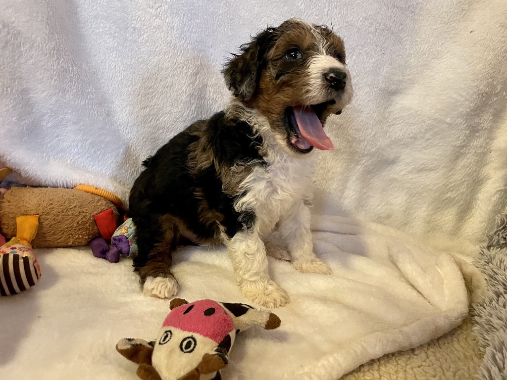
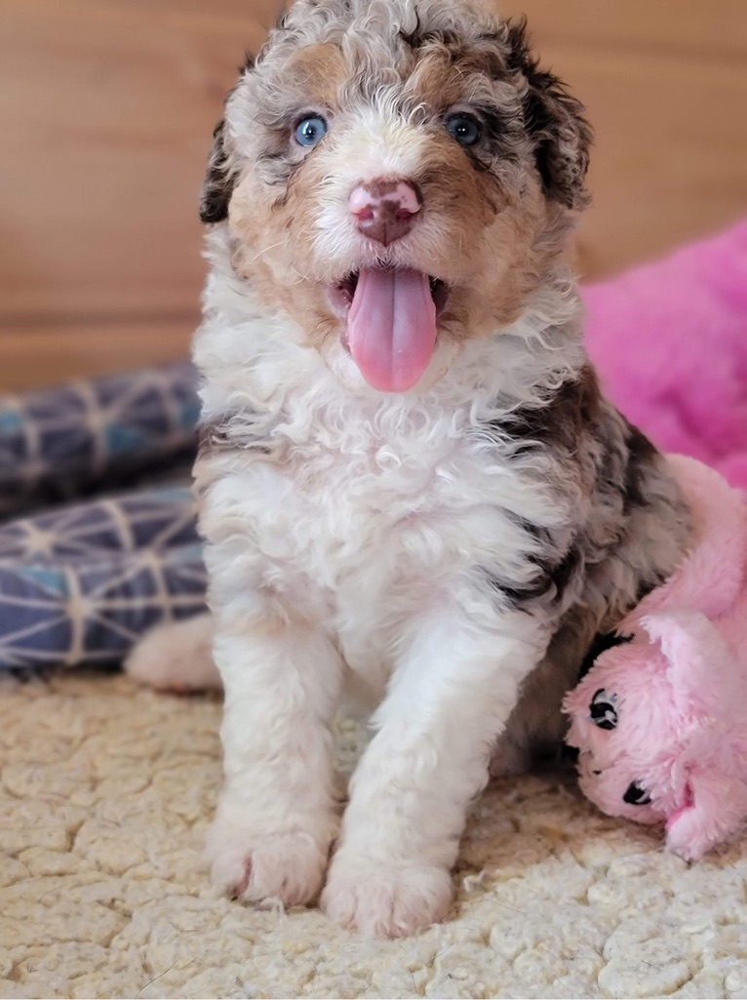

Aussiedoodles
Welcome to the Wonderful World of Aussiedoodles!The Aussiedoodle is a delightful breed of dog that combine the intelligent and highly desirable hypoallergenic characteristics of the Poodle with the ever loyal, always game Australian Shepherd. These charming dogs are truly one of a kind! The variety of colors found among Aussiedoodles is quite a wide variety, literally something for everyone. Aussiedoodles, are not only incredibly adorable but also highly intelligent and playful.
Aussiedoodles quickly capture the hearts of their families and others that meet them, one of the standout features of the Aussiedoodle is their coat, which often inherits the Poodle's hypoallergenic qualities and the Australian Shepherd's striking appearance. Their coat can range from curly to wavy, and it requires regular grooming to keep it in top shape.
Beyond their looks, Aussiedoodles are known for their fantastic temperament. They are energetic, affectionate, and eager to please, making them great companions for a wide variety of families and individuals.
In addition to their appealing personality, Aussiedoodles are highly loyal and form strong bonds with their owners. This deep connection often translates into them being excellent therapy dogs. Their ability to quickly bond with people and their intuitive nature make them particularly suited for roles where emotional support and companionship are key.
Whether as a family pet or a therapy animal, the Aussiedoodle’s unique blend of qualities ensures that they are a cherished and standout companion in any setting.
Apply to become part of our Doodle Dandy Family and discover how a Aussiedoodle can bring endless joy and companionship to your home! Once you have submitted your application we are happy to text, call or video call with the puppies.
Apply Here 